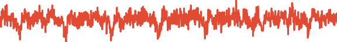
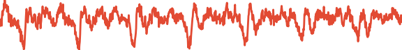

Abstract: This paper introduces WaveGrad, a conditional model for waveform generation through estimating gradients of the data density. This model is built on the prior work on score matching and diffusion probabilistic models. It starts from Gaussian white noise and iteratively refines the signal via a gradient-based sampler conditioned on the mel-spectrogram. WaveGrad is non-autoregressive, and requires only a constant number of generation steps during inference. It can use as few as 6 iterations to generate high fidelity audio samples. WaveGrad is simple to train, and implicitly optimizes for the weighted variational lower-bound of the log-likelihood. Empirical experiments reveal WaveGrad to generate high fidelity audio samples matching a strong likelihood-based autoregressive baseline with less sequential operations.
Note:
To obtain the best quality, we strongly recommend readers to listen to the audio samples with headphones.
Contents
Visualization
Text: Here are the match lineups for the Colombia Haiti match.6 iterations:
Warning: white noise. Reduce the volume for the first three examples.
| n=0 |
||||||
| n=1 |
||||||
| n=2 |
 | |||||
| n=3 |  | |||||
| n=4 | ||||||
| n=5 | ||||||
| n=6 |
50 iterations:

WaveGrad conditioned on the noise level
In this section, we demonstrate the audio samples from WaveGrad model conditioned on noise levels.
During training, only one model is trained.
Different rows correspond to different inference schedules.
| Text | Weekends at twenty three fifty. | Here are the match lineups for the Colombia Haiti match. |
On Friday night in Bridgeport expect a temperature of minus four degrees Fahrenheit. |
| Reference | |||
| WaveGrad Base(Linear 1000) | |||
| WaveGrad Base(Linear 50): | |||
| WaveGrad Base(Fib 25): | |||
| WaveGrad Base(Manual 6): |
WaveGrad conditioned on a discrete iteration index
In this section, we demonstrate the audio samples from models conditioned on discrete indices.
Each row corresponds to an individual model.
| Text | Weekends at twenty three fifty. | Here are the match lineups for the Colombia Haiti match. |
On Friday night in Bridgeport expect a temperature of minus four degrees Fahrenheit. |
| Reference | |||
| WaveGrad Base(Linear 1000) | |||
| WaveGrad Base(Linear 50): | |||
| WaveGrad Base(Fib 25): |